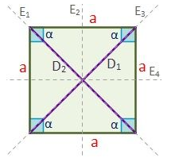

*Lados: el cuadrado tiene cuatro lados (a) iguales y paralelos dos a dos.
*Ángulos: tiene cuatro ángulos (α) iguales y rectos de 90º. Los ángulos interiores, como en todo cuadrilátero, suman 360º.
*Diagonales: las diagonales son segmentos que unen los vértices opuestos. Tiene dos diagonales (D1 y D2) iguales y perpendiculares.
Se cortan en el centro del cuadrado.
*Ejes de simetría: son líneas imaginarias que dividen el cuadrado en dos partes simétricas respecto a dicho eje. Tiene cuatro ejes de
simetría (E1, E2, E3 y E4).
El área del cuadrado se calcula a partir de uno de sus lados (a). Es el producto de la base por la altura del cuadrado, ya que al ser ambas iguales, el área será un lado al cuadrado.
El cuadrado tiene los cuatro lados iguales, por lo que su perímetro es cuatro veces uno de sus lados.